揭秘Chiplet技术，摩尔定律拯救者，两大阵营、六个核心玩家
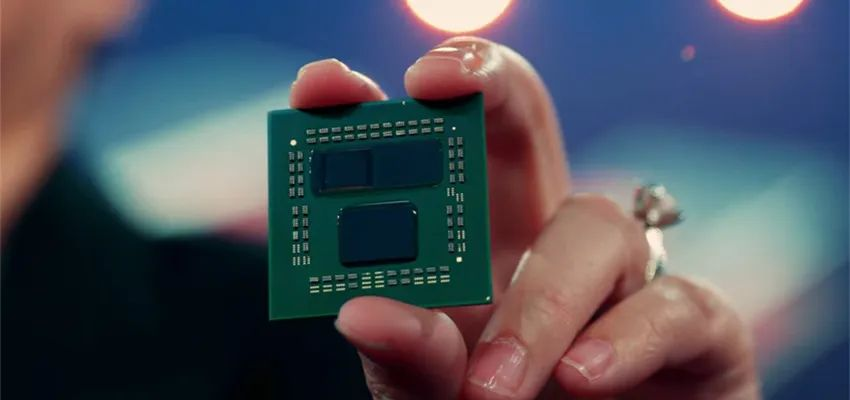
产业链在生产效
率优化需求下的必然选择。
编辑 |
芯东西内参
Chiplet技术的出现是产业链在生产效率优化需求下的必然选择，其技术核心在于实现芯片间的高速互联，因此 UCIe
在具体的封装方式上未对成员做出严格限制，产业内也分化出了两个阵营。
晶圆厂阵营以大面积硅中介层实现互联为主，可提供更高速的连接和更好的拓展性；而封装厂阵营则努力减少硅片加工需求，提出更有廉价、更有性价比的方案；晶圆厂和封装厂都谋求在 Chiplet 时代获得更高的产业链价值占比。国内，长电科技推出 TSV-less 的先进封装方案XDFOI，引领产业发展；通富微电通过其优秀的晶圆级封装能力，绑定 AMD 实现高速成长。
本期我们推荐长江证券的报告《Chiplet 技术：先进封装，谁主沉浮》，揭秘Chiplet技术及其产业格局。
来源 长江证券
原标题：
《Chiplet 技术：先进封装，谁主沉浮
》
作者：杨洋 钟智铧 韩字杰
01
.
Chiplet
芯片异构在制造层面效率优化
实际上，Chiplet 最初的概念原型出自 Gordon Moore 1965 年的论文《Cramming more components onto integrated circuits》；Gordon Moore 在本文中不仅提出了著名的摩尔定律，同时也指出“用较小的功能构建大型系统更为经济，这些功能是单独封装和相互连接的”。
2015 年，Marvell 周秀文博士在 ISSCC 会议上提出 MoChi（Modular Chip，模块化芯片）概念，为 Chiplet 的出现埋下伏笔。我们认为，现代信息技术产业的发展不是探索未知的过程，而是需求驱动技术升级，
Chiplet
技术的出现是产业链在生产效
率优化需求下的必然选择。
计算机能够根据一系列指令指示并且自动执行任意算术或逻辑操作串行的设备。日常生活中，我们所使用的任何电子系统都可以看作一个计算机，如：电脑、手机、平板乃至微波炉、遥控器等都包含了计算机系统作为核心控制设备。
Chiplet 出现离不开两个大的趋势：
1）计算机系统的异构、集成程度越来越高
为了便于理解产业界为何一定要选择 Chiplet，本报告从计算机体系结构的角度出发，本报告将首先理清计算机体系结构的一个重要发展思路——异构计算。如同现代经济系统一样，现代经济系统为了追求更高的产出效率，产生了极为庞大且复杂的产业分工体系，计算机系统的再分工就是异构计算。
GPU、DPU 的出现就是为了弥补 CPU 在图形计算、数据处理等方面的不足，让 CPU 能够专注于逻辑的判断与执行，这就是计算机系统（System）。精细化的分工也使得整个体系变得庞大，小型计算设备中只能将不同的芯片集成到一颗芯片上，组成了 SoC（System on Chip）。
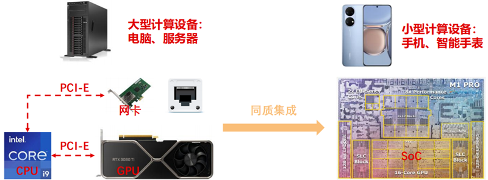
▲SoC 的概念（System on Chip）
伴随着计算机在人类现代生活中承担越来越多的处理工作，计算机体系结构的异构趋势会愈发明显，需要的芯片面积也会越来越大，同时也需要如电源管理 IC 等芯片与逻辑芯片异质集成，而 SoC 作为一颗单独的芯片，其面积和加工方式却是受限的，所以 SoC并不是异构的终极解决方案。
2）芯片间的数据通路带宽、延迟问题得到了产业界的解决
芯片的工作是执行指令，处理数据，
芯片间的互联需要巨大的带宽和超低的延时
。既然单颗芯片的面积不能无限增加，将一颗芯片拆解为多颗芯片，分开制造再封装到一起是一个很自然的想法。芯片间的互联需要构建强大的数据通路，即超高的频率、超大的带宽、超低的延时，以台积电 CoWoS 技术为代表的先进封装技术也使之得到了解决。
EE芯视频推荐
视频：王升杨：实现“高品质进口替代”的底气来自哪里？
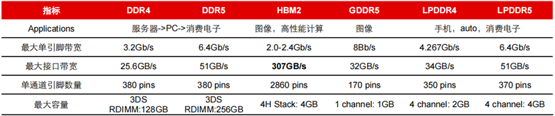
▲基于先进封装的 HBM2 为芯片提供 307GB/s 的高速带宽
2022 年 3 月，苹果公司发布了 M1 Ultra 芯片，其采用了 UltraFusion 封装架构，通过两枚 M1 Max 晶粒的内部互连。架构上，M1 Ultra 采用了 20 核中央处理器，由 16 个高性能核心和 4 个高能效核心组成。与市面上功耗范围相近的 16 核 CPU 芯片相比，M1Ultra 的性能高出 90%。两颗 M1 Max 的高速互联是苹果芯片实现领先的关键，
苹果的
UltraFusion
架构利用硅中介层来连接多枚芯片，可同时传输超过
10,000
个信号，从
而实现高达
2.5TB/s
低延迟处理器互联带宽。
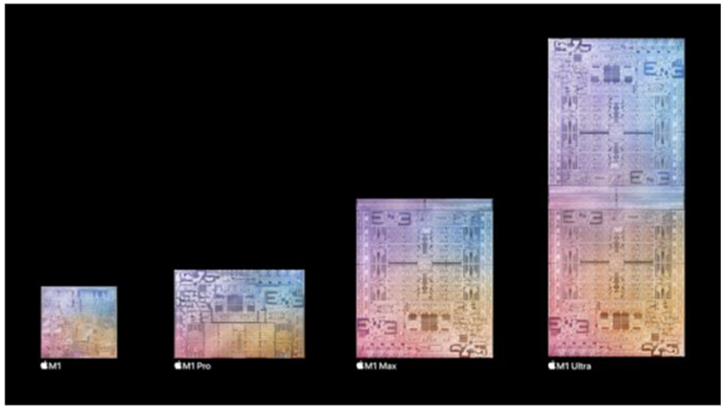
▲历代 M1 芯片内部结构图，M1 Ultra 为两枚 M1 Max 拼接而成
AMD 为缓解“存储墙”问题，在其 Zen 3 架构的锐龙 7 5800X3D 台式处理器率先采用3D 堆叠 L3 高速缓存，使 CPU 可访问高达 96MB L3 级高速缓存，大幅提升芯片运算效率。
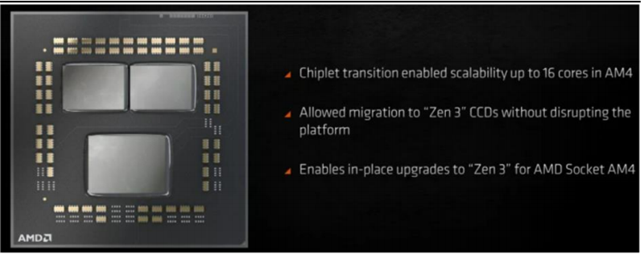
▲AMD Zen 3 Chiplet
3）异构集成+高速互联塑造了 Chiplet 这一芯片届的里程碑
综上，Chiplet 本身并非技术突破，而是多项技术迭代进步所共同塑造的里程碑，芯片龙头企业仍拥有话语权；因此，
Chiplet
技术短期内并不会给行业带来太多直接的影响和
变化，但长期来看必将改变全球集成电路行业生态。
同时，
由于
Chiplet
在设计、制造、
封装等多个环节具备成熟的技术支撑，其推进也将十分迅速。
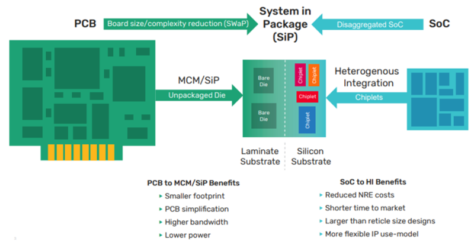
▲Chiplet 是 PCB 的集成缩小，SoC 的解构放大
技术服务于需求，Chiplet 的出现，缓解了算力对晶体管数量的依赖与晶圆制造端瓶颈的矛盾。如前文所言，导致 Chiplet 技术出现的需求决定了它对行业产生的影响大小。随着现代数据处理任务对算力需求的不断提高，本质上，算力提升的核心是晶体管数量的增加。
作为英特尔的创始人之一，Gordon Moore 在最初的模型中就指明，无论是从技术的角度还是成本的角度来看，单一芯片上的晶体管数量不能无限增加；因此，业内在致力于提升晶体管密度的同时，也在尝试其他软硬件方式来提高芯片运行效率，如：异构计算、分布式运算等等。
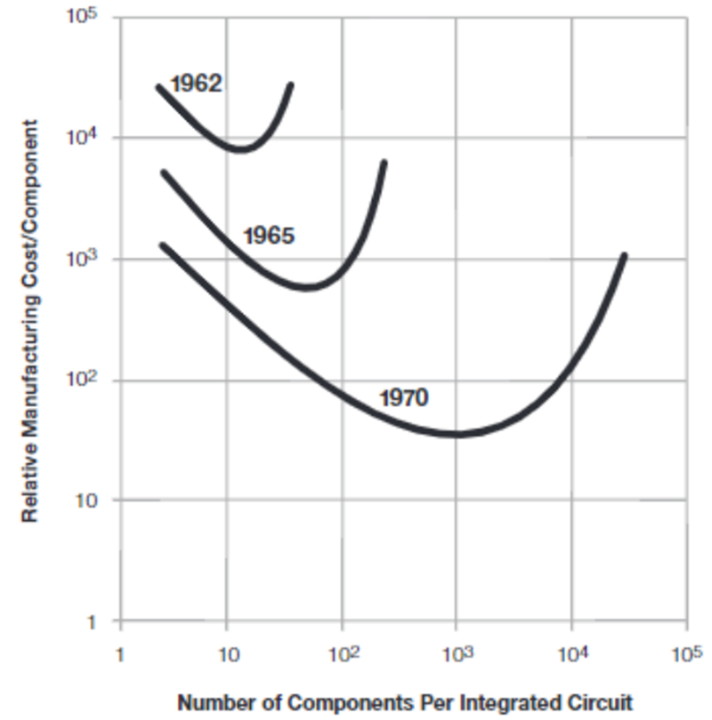
▲晶体管器件生产单价与但芯片晶体管数量的关系
Chiplet
是异构计算的延申，主要解决了芯片制造层面的效率问题。
随着制程缩进，芯
片制造方面出现了两个大的瓶颈：1）28nm 以后，高制程芯片的晶体管性价比不再提升；2）芯片设计费用大幅增长，先进制程芯片设计的沉没成本高到不可接受。
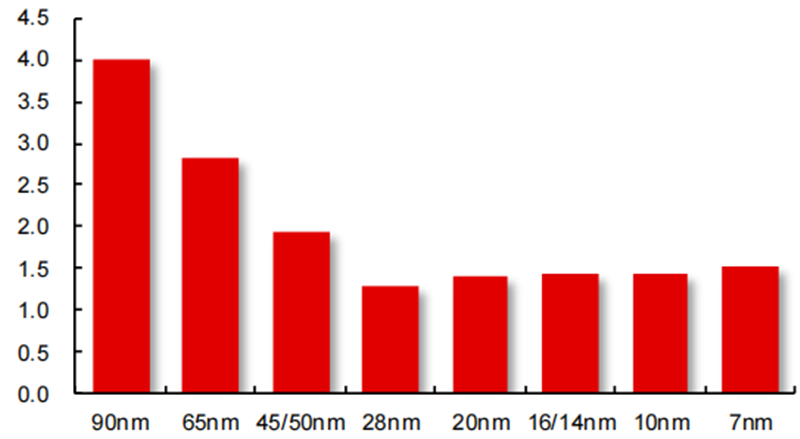
▲各制程每百万颗芯片制造成本，28nm 节点以后不再降低
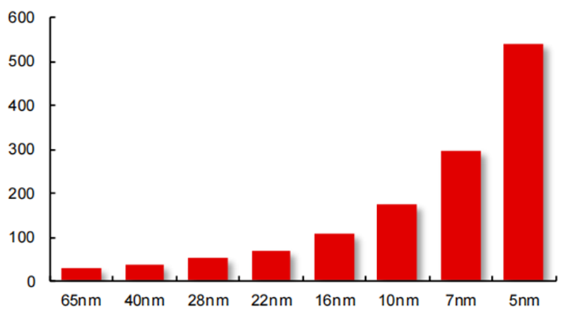
▲先进制程芯片设计成本快速上升（百万美元）
关于 Chiplet 如何提高设计、生产环节的效率，以及对 EDA、IC 设计等行业的影响：
（1）基于小芯片的面积优势，Chiplet 可以大幅提高大型芯片的良率、提升晶圆面积利用效率，降低成本；
（2）基于芯片组成的灵活性，将 SoC 进行 Chiplet 化之后，不同的核心/芯粒可以选择合适的工艺制程分开制造，然后再通过先进封装技术进行封装，不需要全部都采用先进的制程在一块晶圆上进行一体化制造，这样可以极大的降低芯片的制造成本；
（3）基于小芯片 IP 的复用性和已验证特性，将大规模的 SoC 按照不同的功能模块分解为模块化的芯粒，减少重复的设计和验证环节，可以降低设计的复杂度和设计成本，提高产品迭代速度。
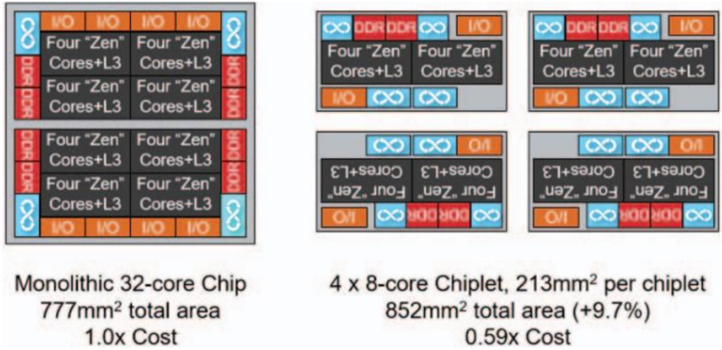
▲与 32 核心 SoC 相比，Chiplet 可大幅降低芯片制造成本
尽管在总的制造成本上有所优化，但由于先进封装在 Chiplet 制造过程中扮演了更加重要的角色，因此封测企业或将在Chiplet 趋势下深度受益。
Chiplet
封装领域，目前呈现出百花齐放的局面。
Chiplet 的核心是实现芯片间的高速互联，同时兼顾多芯片互联后的重新布线。因此，UCIe
联盟在具体的封装方式上未对成员做出严格限制，根据 UCIe
联盟发布的 Chiplet 白皮书，UCIe 联盟支持了市面上主流的
四种封装方式
，分别为：
1） 标准封装：将芯片间的金属连线埋入封装基板中。2） 利用硅桥连接芯片，并将硅桥嵌入封装基板中，如：英特尔 EMIB 方案。3） 使用硅中介层（Si Interposer）连接芯片并进行重新布线，再将硅中介层封装到基板上，如：台积电 CoWoS 方案。4） 使用扇出型中介层进行重布线，仅在芯片连接处使用硅桥连接，如：日月光 FOCoS-B 方案。
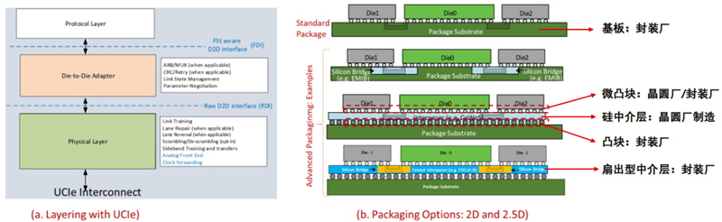
▲UCIe 联盟所推荐的 4 种 Chiplet 封装方式
目前而言，台积电凭借其在晶圆代工领域的优势，其 CoWoS 技术平台已服务多家客户，也迭代了多个批次，初具雏形：台积电 CoWoS 平台的核心在于硅中介层，其生产主要通过在硅片上刻蚀 TSV 通孔实现，技术难点主要实现高深宽比的通孔和高密度引脚的对齐。Die 与 Interposer 生产好之后，交由封装厂进行封装。
Chiplet 在封装层面的技术核心是作为芯片间的互联，其能够实现的芯片间数据传输速度、延迟是技术竞争力的关键，同时方案的稳定性、普适性也将深刻影响其长期的发展空间。
02
.
全球格局
两大阵营，群雄逐鹿
实现 Chiplet 所依靠的先进封装技术在产业链内仍然未实现统一，主要分为晶圆厂阵营和封装厂阵营：晶圆厂阵营以硅片加工实现互联为主，可提供更高速的连接和更好的拓展性；封装厂阵营则努力减少硅片加工需求，提出更有廉价、更有性价比的方案。
台积电：整合 3DFabric 平台，实现丰富拓扑结构组合
。在 2.5D 和 3D 先进封装技术方面，台积电已将 2.5D 和 3D 先进封装相关技术整合为“3DFabric”平台，由客户自由选配，前段技术包含 3D 的整合芯片系统（SoIC InFO-3D），后段组装测试相关技术包含 2D/2.5D 的整合型扇出（InFO）以及 2.5D 的 CoWoS系列家族。
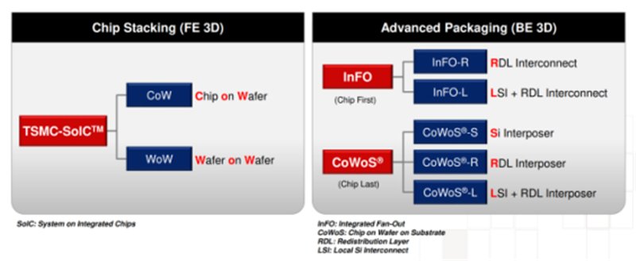
▲台积电 3DFabric 平台
2.5D 方面，台积电提供包含 CoWoS 及 InFO 两种大方案。其中，CoWoS 包含 CoWoS- S、CoWoS-R 及 CoWoS-L 三种封装方式。
CoWoS-S 采用硅中介层，利用硅片作为中介层连接小芯片。与其他方案相比，大面积硅片作为中介层的方案可提供更高密度的芯片互联，但价格上也更贵。
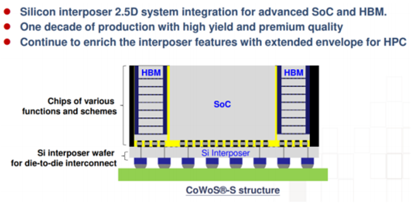
▲台积电 CoWoS-S 架构
CoWoS-R 使用有机转接板以降低成本，其封装方案与部分封测厂提供的方式一致，有机转接板可实现的互联密度更低。
CoWoS-L 使用插入有机转接板中的小硅“桥”，仅在芯片互联部分使用硅片，用于相邻芯片边缘之间的高密度互连。这种实现互联方式在成本和性能上处于 CoWoS-R 和 CoWoS-S 之间。
InFO 方面
，
台积电在临时载体上精确（面朝下）放置后，芯片被封装在环氧树脂“晶圆”中，再分布互连层被添加到重建的晶圆表面，将封装凸块直接连接到再分配层，主要包括 InFO_PoP（主要用于移动平台）、InFO_oS（主要用于 HPC 客户）及 InFO_B（InFO_PoP 的替代方案）三种拓扑。
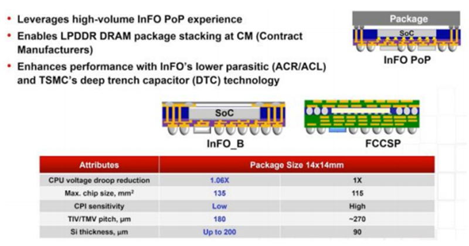
▲台积电 InFO_PoP 及 InFO_B（bottom only）架构
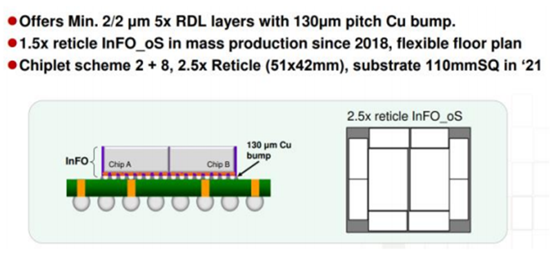
▲台积电 InFO_OS 架构
台积电更先进的垂直芯片堆叠 3D 拓扑封装系列被称为“系统级集成芯片”（SoIC），利用芯片之间的直接铜键合，具有更小间距。
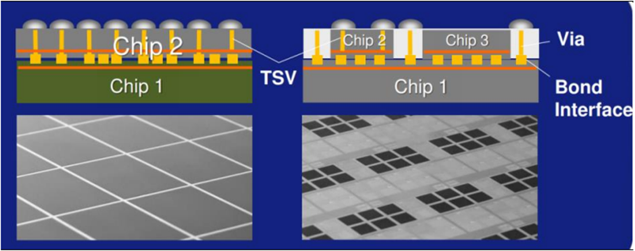
▲台积电 3D 芯片堆叠 SoIC
三星：3D IC 封装方案强化 Chiplet 代工产业布局。
三星由 1990 年起开启封装技术研发，目前通过 SiP 实现高端封装技术演进，主要技术趋势汇总如下图。
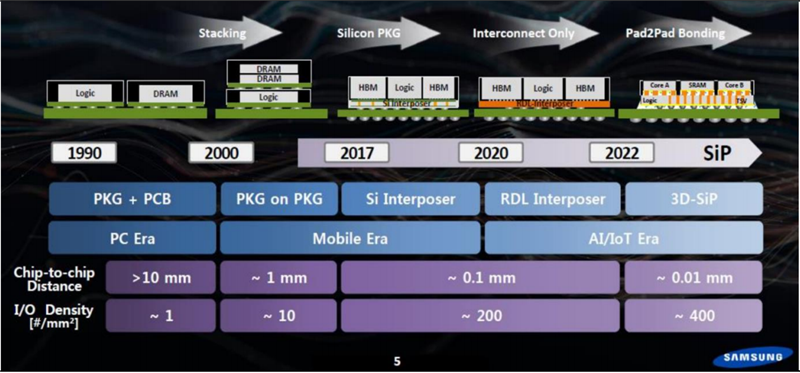
▲三星电子封装布局历史沿革
2020 年 8 月，三星公布了 X Cube 3D 封装技术（全称为 extended cube，意为拓展立方体）。在芯片互连方面，使用了成熟的硅通孔 TSV 工艺。目前 X Cube 已经能把 SRAM芯片堆叠在三星生产的 7nm EUV 工艺的逻辑芯片上，这样可以更易于扩展 SRAM 的容量，同时也缩短了信号连接距离，以提升数据传输的速度和提高能效。此后发布 I-Cube 将一个或多个逻辑 die 和多个 HBM die 水平放置在硅中介层，进行异构集成。
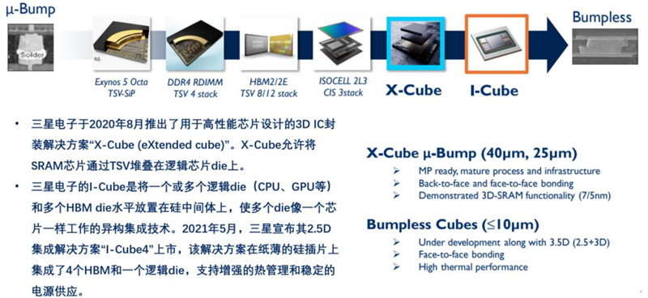
▲三星电子 3D IC 解决方案
日月光：FOCoS 方案力争减硅，降低成本。
日月光的 FOCoS 提供了一种用于实现小芯片集成的硅桥技术，称为 FOCoS-B（桥），它利用带有路由层的微小硅片作为小芯片之间的封装内互连，例如图形计算芯片 (GPU)和高带宽内存 (HBM)。硅桥嵌入在扇出 RDL 层中，是一种可以不使用硅中介层的 2.5D封装方案。
FOCoS 的硅桥在封装中提供超细间距互连，可以解决系统中的内存带宽瓶颈挑战。与使用硅中介层的 2.5D 封装相比，FOCoS-B 的优势在于只需要将两个小芯片连接在一起的区域使用硅片，可大幅降低成本。
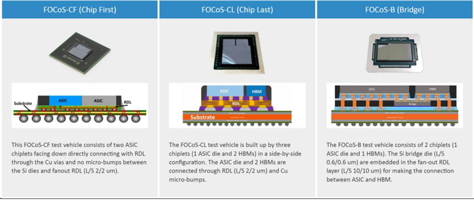
▲日月光 FOCoS 解决方案
Amkor：深度布局 TSV-less 工艺
。Amkor 方面，公司 2015 年推出 SLIM 及 SWIFT 解决方案；且持续进行技术布局，具备 2.5D/3D TSV 封装能力。
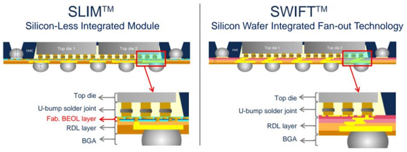
▲Amkor SLIM/SWIFT 解决方案
TSV-less 工艺可被用于建立先进 3D 结构。SLIM 及 SWIFT 方案均采用 TSV-less 工艺，简化了 2.5D TSV 硅中介层运用时 PECVD 及 CMP 工序。
以 SWIFT（Silicon Wafer Integrated Fan-Out Technology）方案为例，方案采用 RDL first 技术，RDL 线宽线距能力≤2um，μbump pitch 40um，SWIFT 封装可实现多芯片集成的 3D POP 封装以及无需 TSV（TSV-Less）具有成本优势的 HDFO 高密度扇出型封装，适用于高性能 CPU/GPU，FPGA，Mobile AP 以及 Mobile BB 等。
3D SWIFT 的独特特性要部分归功于与此项创新晶圆级封装技术相关的小间距功能。它使应用积极主动的设计规则成为现实，有别于传统的 WLFO 和基于层压板的封装，且能够被用于建立先进的 3D 结构，以应对新兴移动和网络应用中日益高涨的 IC 集成需求。
长电科技：国内封装龙头，TSV-less 路线引领
。长电科技聚焦关键应用领域，在 5G 通信类、高性能计算、消费类、汽车和工业等重要领域拥有行业领先的半导体先进封装技术（如 SiP、WL-CSP、FC、eWLB、PiP、PoP及 XDFOI 系列等）以及混合信号/射频集成电路测试和资源优势，并实现规模量产，能够为市场和客户提供量身定制的技术解决方案。
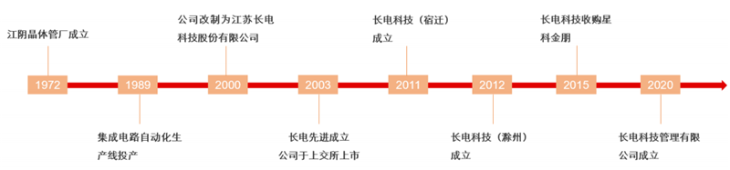
▲长电科技历史沿革
XDFOI 方案预计于 2022H2 实现量产，相比 2.5D TSV，XDFOI 具备更高性能、更高可靠性以及更低成本等特性。XDFOI 为一种以 2.5D TSV-less 为基本技术平台的封装技术，在设计上，该技术可实现 3-4 层高密度的走线，其线宽/线距最小可达 2μm，可实现多层布线层。
另外，采用了极窄节距凸块互联技术，封装尺寸大，可集成多颗芯片、高带宽内存和无源器件。长电科技已完成超高密度布线并开始客户样品流程，预计 2022H2量产，重点应用领域为高性能运算如 FPGA、CPU/GPU、AI、5G、自动驾驶、智能医疗等。
长电科技的无硅通孔扇出型晶圆级高密度封装技术，可在硅中介层（Si Interposer）中使用堆叠通孔技术（Stacked VIA）替代 TSV 技术。该技术可以实现多层 RDL 再布线层，2×2um 的线宽间距，40um 极窄凸块互联，以及多层芯片叠加。
此外，XDFOI 技术所运用的极窄节距凸块互联技术，还能够实现 44mm×44mm 的封装尺寸，并支持在其内部集成多颗芯片、高带宽内存和无源器件。这些优势可为芯片异构集成提供高性价比、高集成度、高密度互联和高可靠性的解决方案。
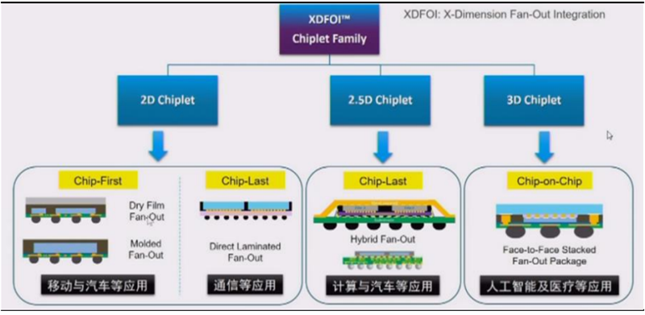
▲长电科技 XDFOI 2.5D 技术特征
先进封测技术涵盖 4nm 制程，突破国内顶尖封装工艺节点。长电科技 2022 年 7 月公告在进封测技术领域取得新的突破，实现 4nm 工艺制程手机芯片的封装，以及 CPU、GPU 和射频芯片的集成封装。4nm 芯片作为先进硅节点技术，也是导入 Chiplet 封装的一部分，作为集成电路领域的顶尖科技产品之一，可被应用于智能手机、5G 通信、人工智能、自动驾驶，以及包括 GPU、CPU、FPGA、ASIC 等产品在内的高性能计算领域。
通富微电：绑定 AMD，晶圆级封装助力 Chiplet。
全球封测行业龙头，先进封装耕耘优质客户。通富微电成立于 1997 年，并于 2007 年深交所上市，主要从事集成电路封装测试一体化业务。2021 年全球 OSAT 中通富微电位列第五，先进封装方面位列第七。
目前，公司技术布局进展顺利，已开始大规模生产Chiplet 产品，工艺节点方面 7nm 产品实现量产，5nm 产品完成研发。受益于公司在封测技术方面的持续耕耘，目前公司与 AMD、NXP、TI、英飞凌、ST、联发科、展锐、韦尔股份、兆易创新、长鑫存储、长江存储、集创北方及其他国内外各细分领域头部客户建立了良好的合作关系，2021 年，国内客户业务规模增长超 100%。不断保稳业务压舱石。
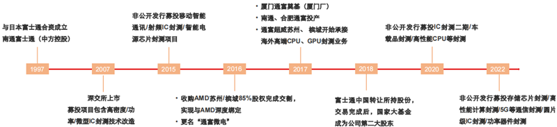
▲通富微电历史沿革
公司目前已建成国内顶级 2.5D/3D 封装平台（VISionS）及超大尺寸 FCBGA 研发平台，完成高层数再布线技术开发。
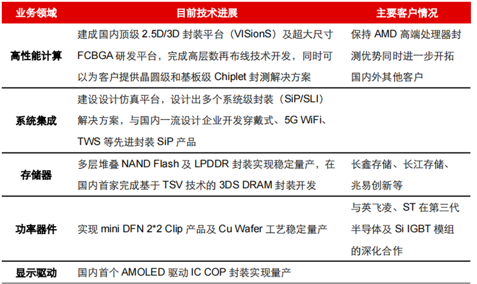
▲通富微电目前封装技术进展
针对 Chiplet，通富微电提供晶圆级及基板级封装两种解决方案，其中晶圆级 TSV 技术是 Chiplet 技术路径的一个重要部分。WLP 晶圆级封装大部分工艺是对晶圆进行整体封装，封装完成后再进行切割分片。
晶圆级封装是通过芯片间共享基板的形式，将多个裸片封装在一起，主要用于高性能大芯片的封装，利用次微米级硅中介层以 TSV 技术将多个芯片整合于单一封装中，能够显著降低材料成本，利用无载片技术，在芯片到晶圆键合与缝隙填充之后，整个晶圆由于背侧硅穿孔露出而进行覆盖成型与翻转，并直接由环氧模型树脂维持。
后摩尔时代，Chiplet由于其高性能、低功耗、高面积使用率以及低成本受到广泛关注，在延续摩尔定律的“经济效益”方面被寄予厚望。后摩尔时代，Chiplet芯片设计环节能够降低大规模芯片设计的门槛，给中国集成电路产业带来了巨大发展机遇。
来源：芯东西